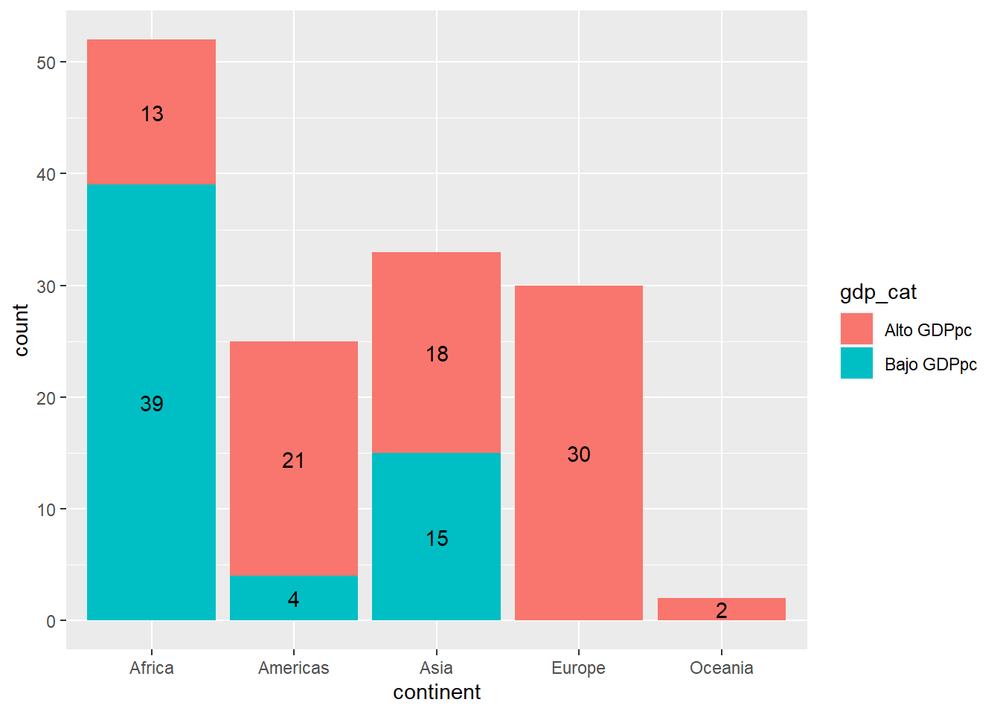
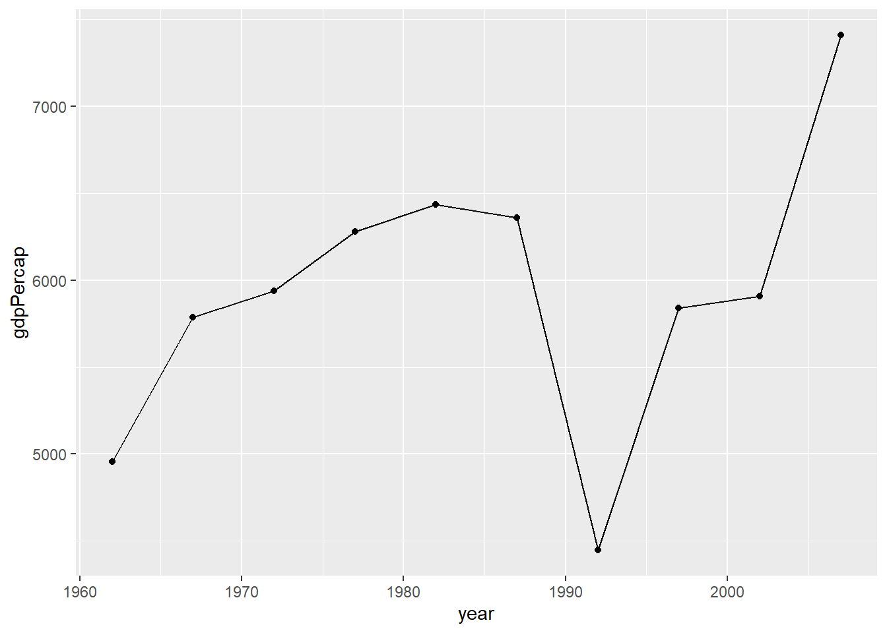
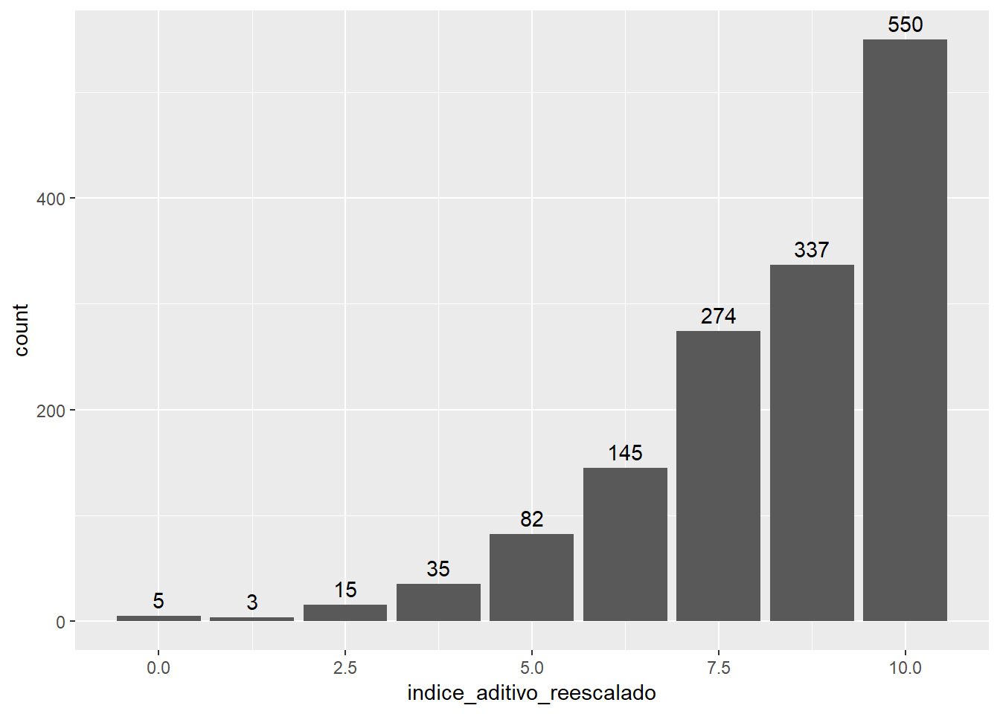
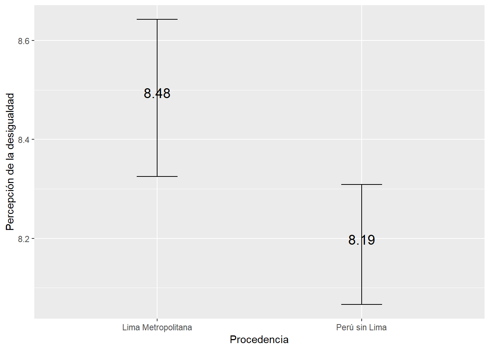

Sesión 3 Visualización de datos con ggplot2
3.1 Abrimos las librerías que vamos a utilizar
En este caso, seguiremos trabajando con las librerías del mundo del tidyverse:
3.2 Visualización con ggplot2: Introducción
Es un sistema organizado de visualización de datos. Forma parte del conjunto de librerías llamado tidyverse.
La primera versión del paquete fue liberada por Hadley Wickham el 10 de junio de 2007, desde entonces el paquete se ha enriquecido con diferentes elementos.
Ggplot2 se ha convertido en el paquete de creación de visualizaciones más popular en el universo R por permitir de manera sencilla obtener gráficos de alta calidad. Incluso otros programas de Data Science carecen de una herramienta como ggplot2.
3.2.1 Gramática de ggplot2
La gramática del ggplot2 se basa en el libro The Grammar of Graphics
A diferencia de los gráficos con el paquete base donde creamos un gráfico a base de pasos sucesivos, ggplot2 se basa en una gramática de gráficos, añadiendo elementos a un graphical device , donde distintos componentes independientes se pueden combinar de muchas maneras diferentes.


3.2.3 Data (Capa 1)
Es la materia prima sobre la cual se van a posicionar el resto de capas y los datos que se desean representar.
El ggplot2 sólo acepta un tipo de datos: data.frames/ tibbles. No permite vectores.
Vamos a utilizar la data del paquete {gapminder}.
## # A tibble: 3 × 6
## country continent year lifeExp pop gdpPercap
## <fct> <fct> <int> <dbl> <int> <dbl>
## 1 Afghanistan Asia 1952 28.8 8425333 779.
## 2 Afghanistan Asia 1957 30.3 9240934 821.
## 3 Afghanistan Asia 1962 32.0 10267083 853.Colocamos la función ggplot() y nos damos cuenta que tenemos un lienzo. Es el primer paso!
3.2.4 Aesthetics / “Estéticas” (Capa 2)
aes()Indican las variables que se van a graficar, tanto en el eje horizontal (x) como en el eje vertical (y).
Ggplot2 no está pensado para gráficos tridimensionales, pero ciertamente podemos incluir una tercera variable, por ejemplo, indicando el color si deseamos identificar grupos, o indicando el tamaño (de los puntos en un scatterplot) para agregar una nueva variable cuantitativa.
Siguiendo con el ejemplo del punto anterior, como ya hemos colocado ggplot() le SUMAMOS una capa adicional, en este caso, las Aesthetics.
data |> # Data
ggplot()+ # Iniciamos la construcción del gráfico con ggplot
aes(x = lifeExp) # Establecemos la variable 'lifeExp' como el eje x
Nos damos cuenta que en el gráfico ya aparece, en el eje X, la variable lifeExp. Sin embargo, aún no mostramos ninguna gráfica.
3.2.5 Objetos geométricos (Capa 3)
Funciones: geom_line(), geom_boxplot(), etc.
Indica qué tipo de gráfico (geometría) se va a construir: gráfico de barras, columnas, puntos, histográmas, boxplots, líneas, densidad, entre otros.
En el paquete {ggplot2} existen 30 geometrías disponibles. Puedes ver el detalle de estos en la documentación del paquete.
Cada geometría tiene su propia función y, como ya hemos visto, cada una puede tener distintos argumentos. Estas 3 capas son el mínimo necesario para hacer un gráfico:
Data + Aesthetics + Geometries
3.2.5.1 Histograma
Tipo de gráfico utilizado en estadística para representar la distribución de frecuencia de un conjunto de datos numéricos continuos. En un histograma, el rango de valores se divide en un conjunto de intervalos mutuamente excluyentes y consecutivos (también llamados “bins” o “clases”), y se cuenta el número de observaciones que caen dentro de cada intervalo. Estos recuentos se representan como barras verticales que se elevan sobre los intervalos correspondientes, y su altura indica la frecuencia o densidad de observaciones en ese intervalo.
El histograma es una herramienta útil para explorar la forma general de una distribución de datos, así como para identificar características como la asimetría, la moda y los valores atípicos
data |> # Data
ggplot() + # Iniciamos la construcción del gráfico con ggplot
aes(x = lifeExp) + # Establecemos la variable 'lifeExp' como el eje x
geom_histogram() # Agregamos un histograma basado en 'lifeExp'## `stat_bin()` using `bins = 30`. Pick better value with `binwidth`.data |> # Data
ggplot() + # Iniciamos la construcción del gráfico con ggplot
aes(x = lifeExp) + # Establecemos la variable 'lifeExp' como el eje x
geom_histogram(bins=15) # Agregamos un histograma basado en 'lifeExp' con un bins=15
3.2.5.2 Gráfico de barras
En un gráfico de barras vertical,las categorías se representan en el eje horizontal y la frecuencia o cantidad en el eje vertical.
El gráfico de barras es una herramienta útil para comparar la frecuencia o cantidad de diferentes categorías o variables en un conjunto de datos.
EJEMPLO - SITUACIÓN 1:
Tienes una base de datos con las observaciones originales:
data |>
select(continent) |> # Seleccionamos solo la columna 'continent' del conjunto de datos 'data'
head() # Mostramos las primeras 6 entradas (por defecto) de la columna 'continent'## # A tibble: 6 × 1
## continent
## <fct>
## 1 Asia
## 2 Asia
## 3 Asia
## 4 Asia
## 5 Asia
## 6 AsiaUtilizamos la función geom_bar(). El resultado es que la función ha CONTADO la frecuencia de cada categoría de continent.
data |> # Data
ggplot() + # Iniciamos la construcción del gráfico con ggplot
aes(x = continent) + # Establecemos la variable 'continent' como el eje x
geom_bar() # Creamos un gráfico de barras basado en el conteo de 'continent'EJEMPLO - SITUACIÓN 2:
En algunas ocasiones ya contamos con el conteo realizado y sólo deseamos el gráfico. Para ello utilizamos el ARGUMENTO stat=“identity”.
Un caso como el siguiente:
## # A tibble: 5 × 2
## continent n
## <fct> <int>
## 1 Africa 624
## 2 Americas 300
## 3 Asia 396
## 4 Europe 360
## 5 Oceania 24Aplicamos:
data |> # Data
count(continent) |> # Contamos las observaciones por 'continent'
ggplot()+ # Iniciamos la construcción del gráfico con ggplot
aes(y=n, x=continent)+ # Establecemos 'continent' como el eje x y el conteo 'n' como el eje y
geom_bar(stat="identity") # Creamos un gráfico de barras usando las cuentas directamente
EJEMPLO - MÁS DETALLE
Si deseamos agregar etiquetas de valores utilizamos geom_text()
data |>
ggplot() +
aes(x = continent) + # Definimos 'continent' como el eje x
geom_bar() + # Creamos un gráfico de barras que cuenta las observaciones por 'continent'
geom_text(stat='count', # Añadimos etiquetas de texto basadas en el conteo de observaciones
aes(label=..count..), # El texto de la etiqueta será el conteo
vjust=-0.5) # Ajustamos la posición vertical de las etiquetas para que aparezcan justo arriba de las barras## Warning: The dot-dot notation (`..count..`) was deprecated in ggplot2 3.4.0.
## ℹ Please use `after_stat(count)` instead.
## This warning is displayed once every 8 hours.
## Call `lifecycle::last_lifecycle_warnings()` to see where this warning was generated.
Y el gráfico de barras apiladas?
data |>
select(-4, -5) |>
mutate(gdp_cat=case_when( # Creamos una nueva variable denominada "gdp_cat" y...
gdpPercap<4000~ "Bajo GDPpc", # si 'gdpPercap' es menor a 4000, clasificamos como "Bajo GDPpc" ...
TRUE~ "Alto GDPpc")) |> # en cualquier otro caso, clasificamos como "Alto GDPpc".
filter(year==2007) |> # Seleccionamos aquellas mediciones del 2007
ggplot()+
aes(x=continent, fill=gdp_cat) + # Definimos 'continent' como el eje x y usamos 'gdp_cat' para el color de las barras
geom_bar()+ # Creamos un gráfico de barras
geom_text(stat='count', # Añadimos etiquetas de texto basadas en el conteo de observaciones
aes(label=..count.., # El texto de la etiqueta será el conteo
group=gdp_cat), # Agrupamos por la categoría de GDP para calcular el conteo
position=position_stack(vjust=0.5)) # Posicionamos las etiquetas en el centro de las barras 
3.2.5.3 Gráfico de línea
data |>
filter(country=="Peru", year>1960) |>
ggplot() + #
aes(x = year) + # Definimos 'year' como el eje x
aes(y = gdpPercap) + # Definimos 'gdpPercap' como el eje y
geom_line()+ # Añadimos una línea para visualizar la tendencia del PIB per cápita a lo largo de los años
geom_point() # Superponemos puntos en cada año para destacar los valores individuales
Separando grupos por color
data |>
filter(continent=="Oceania") |> # Filtramos el dataset para solo tener datos de países en Oceanía
ggplot()+ # Iniciamos la construcción del gráfico con ggplot
aes(x=year) + # Definimos 'year' como el eje x
aes(y=lifeExp) + # Definimos 'lifeExp' como el eje y
aes(color=country) + # Establecemos el color de las líneas y puntos basado en el país
geom_line() + # Añadimos una línea para visualizar la tendencia de la expectativa de vida a lo largo de los años
geom_point() # Superponemos puntos en cada año para destacar los valores individuales
También le podemos añadir las etiquetas de los valores utilizando geom_text()
data |>
filter(continent=="Oceania") |>
ggplot()+
aes(x=year, y=lifeExp, color=country) + # En una práctica óptima, puedes combinar todos los aes() en uno solo, lo que simplifica y hace que el código sea más legible.
geom_line() +
geom_point() +
geom_text(aes(label=round(lifeExp, 1)), # Añade etiquetas de texto con el valor de 'lifeExp' redondeado a un decimal
vjust=-0.5, # Ajusta verticalmente las etiquetas para que aparezcan justo arriba de los puntos
hjust=1.2) # Ajusta horizontalmente las etiquetas para que se desplacen hacia la izquierda de los puntos
3.2.5.4 Gráfico de dispersión
Un gráfico de dispersión es una representación visual en la que se utilizan puntos para mostrar la relación entre dos variables cuantitativas. Cada punto en el gráfico representa una observación y su posición en el eje horizontal (eje X) y vertical (eje Y) indica los valores de las dos variables.
data |>
filter(year==2007, continent=="Americas") |>
ggplot()+ # Iniciamos la construcción del gráfico con ggplot
aes(x=lifeExp, y= gdpPercap)+ # Establecemos 'lifeExp' en el eje x y 'gdpPercap' en el eje y
geom_point() # Representamos cada país como un punto en el gráfico
Con etiquetas:
data |>
filter(year==2007, continent=="Americas") |>
ggplot()+ # Iniciamos la construcción del gráfico con ggplot
aes(x=lifeExp, y= gdpPercap, label=country)+ # Establecemos 'lifeExp' en el eje x, 'gdpPercap' en el eje y, y 'country' como etiqueta
geom_point()+ # Representamos cada país como un punto en el gráfico
geom_text() # Añadimos etiquetas de texto con el nombre de cada país cerca de su respectivo punto 3.2.5.5 Boxplot

Es utilizado para representar la distribución de un conjunto de datos numéricos a través de sus cuartiles.
El gráfico consiste en una caja que representa el rango intercuartil (IQR),es decir, la diferencia entre el tercer cuartil (Q3) y el primer cuartil(Q1).
Dentro de la caja,se dibuja una línea que representa la mediana.
Los bigotes,que se extienden desde la caja, indican el rango de los datos que se encuentran dentro de un cierto múltiplo del IQR, generalmente 1.5 veces el IQR.
Los valores que están por encima o por debajo de los bigotes se representan como puntos o asteriscos, que se conocen como valores atípicos.
El boxplot es útil para identificar valores atípicos y para comparar la distribución de varios conjuntos de datos en un solo gráfico. También permite visualizar la simetría o asimetría de la distribución y la presencia de sesgo.
data |>
ggplot() +
aes(x = lifeExp) + # Establecemos 'lifeExp' en el eje x
geom_boxplot() # Solicitamos un boxplot
Puedes colocar grupos en uno de los ejes para gráficos univariados”
data |>
select(-4, -5) |>
mutate(gdp_cat=case_when(
gdpPercap<4000~ "Bajo GDPpc",
TRUE~ "Alto GDPpc")) |>
filter(year==2007) |>
ggplot()+ # Iniciamos construcción del gráfico con ggplot
aes(x=continent, y=gdpPercap, color=continent)+ # Establecemos 'continent' como eje x, 'gdpPercap' como eje y, y el color de las cajas basado en 'continent'
geom_boxplot() # Representamos un diagrama de cajas para 'gdpPercap' agrupado por 'continent'
3.3 Agregando más detalle a los gráficos
3.3.1 Facetas (Capa 4)
Permite descomponer un gráfico en subgráficos, también llamadas cuadrículas o facetas, según una variable cualitativa.
Sirve para comparar grupos, separándolos y así facilitando la identificación de diferencias significativas entre estos.

data |>
ggplot() + # Iniciamos la construcción del gráfico con ggplot
aes(x = lifeExp, y = gdpPercap, color=continent) + # Establecemos 'lifeExp' en el eje x y 'gdpPercap' en el eje y el color de cada punto según el continente al que pertenece el país
geom_point() + # Representamos cada país como un punto en el gráfico
facet_wrap(~continent) # Separamos el gráfico en múltiples paneles, uno para cada continente
Usamos facet_grid() para cruzar las categorías de dos variables cualitativas
data |>
filter(continent %in% c("Africa","Americas", "Europe")) |>
filter(year==2007) |>
mutate(gdp_cat=case_when(gdpPercap<4000~ "Bajo GDPpc",
TRUE~ "Alto GDPpc")) |>
ggplot() +
aes(x = lifeExp, y = gdpPercap, color=continent) + # Establecemos 'lifeExp' en el eje x y 'gdpPercap' en el eje y el color de cada punto según el continente al que pertenece el país
geom_point() + # Representamos cada país como un punto en el gráfico
facet_grid(cols = vars(continent), rows = vars(gdp_cat)) # Divide el gráfico en múltiples paneles. Las columnas se determinan por 'continent' y las filas por 'gdp_cat'3.3.2 Tranformaciones Estadísticas (Capa 5)
Permite adicionar indicadores o estadísticos específicos calculados a partir de los datos de insumo.
Por ejemplo, se puede colocar la media de una variable numérica.
Podemos graficar haciendo uso de stat_summary.
data |>
mutate(gdp_cat=case_when(
gdpPercap<4000~ "Bajo GDPpc",
TRUE~ "Alto GDPpc")) |>
filter(year==2007) |>
ggplot()+
aes(x=continent, group=gdp_cat, color=gdp_cat)+
stat_summary(aes(y=gdpPercap), # Usamos stat_summary para calcular y representar la media de 'gdpPercap' para cada grupo (gdp_cat) como un punto
fun ="mean",
geom="point") +
stat_summary(aes(y=gdpPercap), # Usamos stat_summary para calcular y representar la media de 'gdpPercap' para cada grupo (gdp_cat) como una línea
fun ="mean",
geom="line") 
Podemos agregarlo encima de otro gráfico.
data |>
select(-4, -5) |>
mutate(gdp_cat=case_when(
gdpPercap<4000~ "Bajo GDPpc",
TRUE~ "Alto GDPpc")) |>
filter(year==2007) |>
ggplot()+
aes(x=continent)+ aes(y=gdpPercap) +
aes(color=continent) +
geom_boxplot()+
stat_summary(fun ="mean",
colour="red",
size = 5,
geom="point") +
stat_summary(fun ="median",
colour="blue",
size = 5,
geom="point")
3.3.3 Coordinadas (Capa 6)
- Sirve para especificar cómo será presentada la información de las variables en los ejes horizontal y vertical.
Cambiamos la escala de uno de los ejes.
data |>
filter(continent=="Asia", year==2007) |>
ggplot()+
aes(x = gdpPercap, y = lifeExp, # Establece 'gdpPercap' en el eje x, 'lifeExp' en el eje y...
size = pop, color = country) |> # ...el tamaño del punto según la 'pop' y el color de cada punto basado en el 'country'
geom_point(show.legend = F, alpha = 0.7) + # Representa cada país como un punto. No muestra la leyenda y ajusta la transparencia de los puntos a 0.7
scale_x_log10() + # Cambia la escala del eje x a una escala logarítmica para mejor visualización de datos con rangos amplios
labs(x = 'GDP Per Capita', # Renombra las etiquetas de los ejes x e y para presentación más clara
y = 'Life Expectancy')
3.3.4 Themes (Capa 7)
Funciones: theme_gray(), theme_bw(), theme_classic()
Es la capa que le da la apariencia final que tendrá el gráfico.
Se utiliza para personalizar el estilo del gráfico, pues modifica elementos del gráfico no ligados a los datos.
Se puede crear un tema para que se adapte a la imagen institucional de una organización o al tipo de diseño de un documento específico.
Se modifican temas tales como el color del fondo, los ejes, tamaño del gráfico, grilla, posición de los nombres, entre otros.
Cambiamos los temas de un gráfico de acuerdo a nuestro gusto:
data |>
filter(continent=="Asia", year==2007) |>
ggplot()+
aes(x = gdpPercap, y = lifeExp,
size = pop, color = country) |>
geom_point(show.legend = F, alpha = 0.7) +
scale_x_log10() + # Cambia la escala del eje x a una logarítmica para mejor visualización de datos con rangos amplios
labs(x = 'GDP Per Capita', # Renombra las etiquetas de los ejes x e y para presentación más clara
y = 'Life Expectancy') +
scale_size(range = c(2, 15))+ # Ajusta el rango de tamaños de los puntos entre 2 y 15 para mejorar la visualización
theme_gray() # Aplica un tema gris al gráfico, que es uno de los temas predefinidos de ggplot2
3.4 Extensiones de ggplot2: Hay mucho más!
120 extensiones disponibles en:
https://exts.ggplot2.tidyverse.org/gallery/
3.4.1 Ordenando etiquetas con ggrepel()
Proporciona geoms de texto y etiquetas para ‘ggplot2’ que ayudan a evitar la superposición de etiquetas de texto.
Las etiquetas se repelen unas de otras y se alejan de los puntos de datos.
Vemos la diferencia entre ggplot2::geom_text() y repel::geom_text_repel()”
data |>
filter(continent=="Americas", year==2007) |>
ggplot()+
aes(x = gdpPercap, y = lifeExp, label=country) +
geom_point(show.legend = F, alpha = 0.7) +
scale_x_log10() +
labs(x = 'GDP Per Capita',
y = 'Life Expectancy') +
scale_size(range = c(2, 15)) +
geom_text()
data |>
filter(continent=="Americas", year==2007) |>
ggplot()+
aes(x = gdpPercap, y = lifeExp, label=country) +
geom_point(show.legend = F, alpha = 0.7) +
scale_x_log10() +
labs(x = 'GDP Per Capita',
y = 'Life Expectancy') +
scale_size(range = c(2, 15)) +
geom_text_repel(max.overlaps=15)
3.4.2 Animando mis gráficos con gganimate()
El paquete gganimate en R extiende las capacidades de ggplot2, permitiendo la creación de gráficos animados de manera sencilla y coherente. Al integrarse estrechamente con ggplot2, gganimate brinda a los usuarios la capacidad de visualizar cambios en los datos a lo largo del tiempo o a través de categorías mediante animaciones fluidas. Las animaciones se generan como secuencias de frames, y los usuarios pueden controlar aspectos como la duración, los intervalos y la transición entre estos frames. Una vez creadas, las animaciones pueden ser guardadas en diversos formatos, como GIF o video, facilitando su compartición y presentación.
3.4.3 Notas finales
- Puedes ver todos los detalles de ggplot2 en la guía elaborada por el mismo Posit:
https://github.com/rstudio/cheatsheets/blob/main/data-visualization.pdf
Te recomiendo que explores más sobre las extensiones del ggplot2 y también sobre los argumentos de cada una de las funciones vistas en clase.
Qué gráficos has necesitado en tu día a día o te gustaría construir? Seguramente hay un paquete para ello en R.
3.5 Tablas
Tanto las tablas como los gráficos tienen sus propias ventajas y se utilizan mejor en diferentes contextos. Es posible que prefieras una tabla en lugar de un gráfico en las siguientes situaciones:
Detalles y Precisión: Si el público necesita ver valores exactos o cifras precisas, las tablas son superiores. Los gráficos ofrecen una representación visual, que es ideal para identificar tendencias, patrones y comparaciones, pero no siempre para determinar un valor específico.
Comparación de Pocos Datos: Si solo estás comparando una pequeña cantidad de puntos de datos, una tabla puede ser más efectiva y clara que un gráfico.
Ejemplo
data_2007 <- data %>%
filter(year == 2007) %>%
group_by(continent) %>%
summarise(mean_gdpPercap = mean(gdpPercap, na.rm = TRUE),
mean_lifeExp = mean(lifeExp, na.rm = TRUE))library(kableExtra)
data_2007 %>%
kable(caption = "Promedios de GDP per cápita y Expectativa de Vida por Continente en 2007") %>%
kable_styling()| continent | mean_gdpPercap | mean_lifeExp |
|---|---|---|
| Africa | 3089.033 | 54.80604 |
| Americas | 11003.032 | 73.60812 |
| Asia | 12473.027 | 70.72848 |
| Europe | 25054.482 | 77.64860 |
| Oceania | 29810.188 | 80.71950 |
Dicho esto, la visualización gráfica tiene muchas ventajas en términos de transmitir rápidamente tendencias, relaciones y patrones. Por lo tanto, en muchas situaciones, especialmente en presentaciones, es útil complementar tablas con gráficos para maximizar la claridad y la comprensión. La elección entre tablas y gráficos dependerá del tipo de datos, el propósito de la comunicación y el público al que esté dirigido.